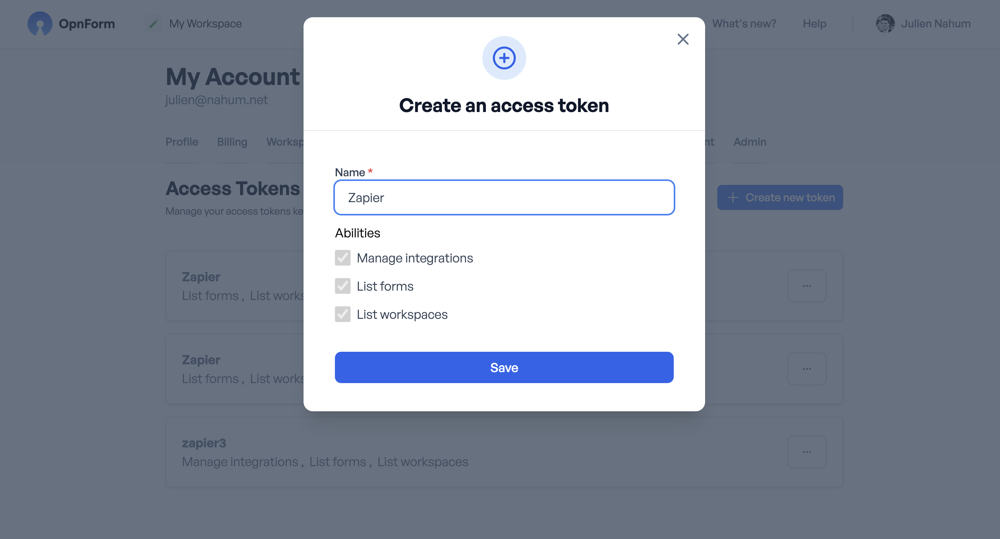

API Keys
Personal Access Tokens are the credentials you'll use to authenticate with the SharaForms REST API. They're scoped, revocable, and tied to your user account – keep them secret.
Creating a token
- Sign in to your SharaForms account.
- Open Settings → Access Tokens (
/home?user-settings=access-tokens). - Click Create new token.
- Pick a descriptive name (e.g. "Zapier Integration").
- Select the abilities you want to grant (see the table below).
- Click Create and copy the token value – you won't be able to see it again after closing the dialog.

Abilities
| Ability | Grants |
|---|---|
| workspaces-read | List workspaces |
| workspaces-write | Create, update or delete workspaces |
| workspace-users-read | List members and invites |
| workspace-users-write | Manage members and invites |
| forms-read | List forms and submissions |
| forms-write | Create or modify forms and submissions |
You can combine abilities as needed – choose the minimum set your integration requires.
Using the token
Send the token in the Authorization header:
http
Authorization: Bearer <access_token>Revoking a token
If a token is leaked or no longer needed:
- Go back to Settings → Access Tokens.
- Click Revoke next to the token.
- Any further API requests that use that token will receive
401 Unauthorized.
Best practices
- Store tokens securely (environment variables, secret managers, CI secrets).
- Use a dedicated token per integration – easier to revoke individually.
- Avoid committing tokens to version control.
- Rotate tokens periodically.